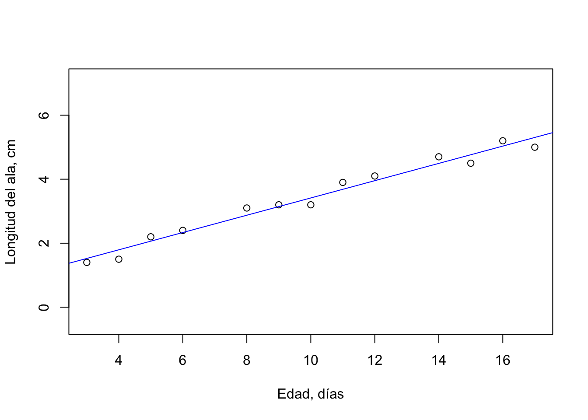
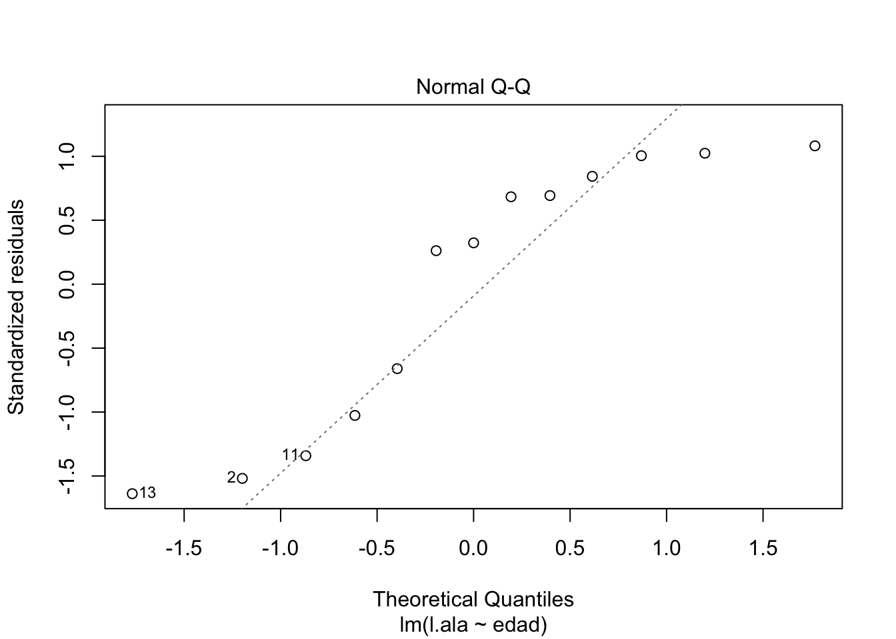
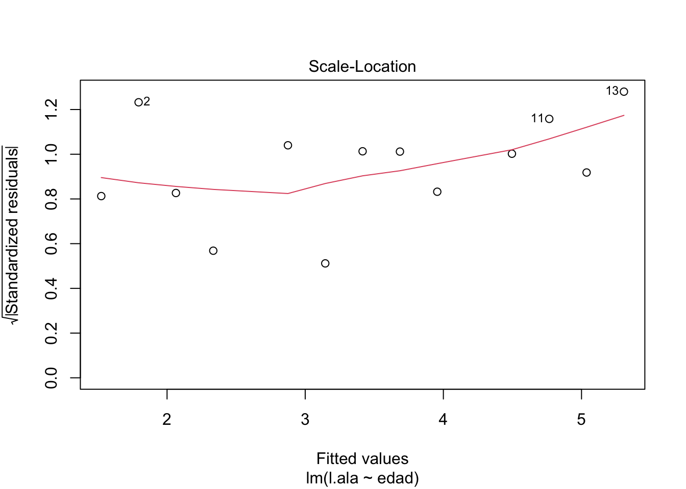
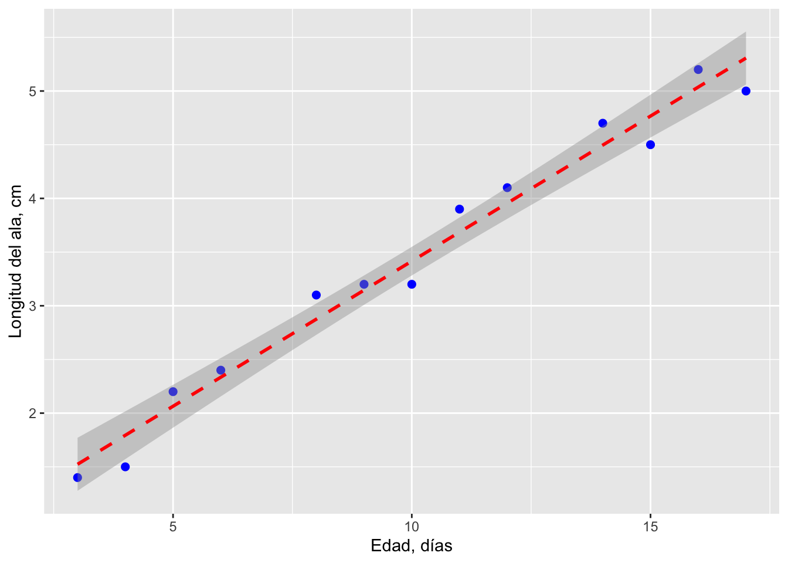

Análisis de Regresión
3.3.Análisis de Regresión
En el análisis de regresión se busca un modelo para describir estadísticamente la relación entre una variable dependiente y otra (u otras) independiente. El modelo es una ecuación matemática que “cuantifica” la relación entre las variables. A la variable dependiente también se le llama variable respuesta (y se grafica en el eje Y) y a la variable independiente también se la conoce como variable predictora o explicativa.
A diferencia del análisis de correlación, en el análisis de regresión se asume una relación causa-efecto en la que las variaciones en la variable predictora causan cambios en la variable respuesta.
Ejercicio
Escribir ejemplos de posibles relaciones causa-efecto entre dos variables, indicando cuál es la variable respuesta y cuál la predictora.
3.3.1.Fundamentos de la Regresión Lineal Simple
Objetivos
Formalizar el modelo y los supuestos de la regresión lineal simple
Una regresión lineal simple modela el efecto de una variable predictora continua sobre una variable de respuesta continua. La ecuación de regresión resultante se puede representar gráficamente como una línea de regresión, que representa los valores esperados de la variable de respuesta para todos los valores de la variable predictora.
En la regresión lineal simple, la relación funcional entre la variable dependiente (y) y la independiente (x) se representa:
\[\mu_y = \alpha + \beta x\]
donde:
\(\mu_y\): es la media poblacional de y para cualquier valor de x,
\(\alpha\): es el intercepto y
\(\beta\): es la pendiente.
Esta ecuación describe una línea recta. En forma estadística esta ecuación toma la forma:
\[y_i = \alpha + \beta x + e_i\]
donde el término \(e_i\) indica la desviación aleatoria o residual del valor de \(y_i\) con respecto al valor esperado \(\mu_y\).
Objetivos del Análisis de Regresión
- Estimar la ecuación de regresión mediante estimadores de \(\alpha\) (a) y \(\beta\) (b) a partir de una muestra y generar intervalos de confianza para los mismos.
- Estimar que tanto está la variable dependiente controlada por la variable independiente, en otras palabras que tanto la variación en y se explica por la variación en x.
- Usar la ecuación de regresión para predecir valores de y a partir de valores de x.
Supuestos del Análisis de Regresión
Como en todo análisis estadístico paramétrico, la regresión lineal simple posee algunos supuestos:
- Las observaciones son independientes, lo cual implica que cada sujeto en una muestra solo se mide una vez: no puede haber pseudoreplicación.
- Se asume que la relación entre las dos variables es lineal.
- Los residuales (\(e_i\)) alrededor de la línea de regresión tienen una distribución normal estándar (\(\mu = 0\)).
- La varianza de los residuales es igual para todos los valores de x de los datos. Esto es equivalente a la homogeneidad de varianza en el ANOVA.
3.3.2.Parámetros de la Regresión
Objetivos
Calcular y probar hipótesis sobre los estimadores de los parámetros de la regresión lineal simple
Método de los Cuadrados Mínimos (Least Squares)
El primer objetivo del análisis de regresión, encontrar los valores de a y b de la ecuación de la recta, requiere un procedimiento matemático para encontrar la “mejor” línea recta que pase por los puntos \((x_i,y_i)\) de las variables respuesta y predictora. Comunmente se utiliza el método de los cuadrados mínimos (‘least squares’), el cual consiste en encontrar el mínimo valor de esta expresión:
\[\sum_{i=1}^n (y_i - \hat{y_i})^2\] es decir el mínimo valor de la suma de las diferencias verticales de la y de cada punto y la y sobre una línea de regresión, elevada al cuadrado (Figura 1).

Figura 1. Ritmo cardíaco (BPM) en función de la temperatura corporal (ºC) en pitones. Línea con la menor distancia vertical a los puntos de la muestra (\(y_i - \hat{y_i}\)).
Cálculos del Coeficiente de Regresión (b) y el Intercepto en el eje Y (a)
Para el cálculo de los estimadores de \(\alpha\) y \(\beta\), según el método de los cuadrados mínimos, se necesitan las siguientes cantidades:
Suma de Cuadrados de la Variable Predictora, \(\sum x^2\)
(todas las sumatorias son de i = 1 hasta n, número de puntos)
\[\sum(X_i - \bar X)^2 = \sum X_i^{2} - \frac{(\sum X_i)^2}{n} \]
Suma de Productos Cruzados, \(\sum xy\) \[\sum(X_i - \bar X)(Y_i - \bar Y) = \sum X_iY_i - \frac{(\sum X_i)(\sum Y_i)}{n}\] El coeficiente de regresión (parámetro \(\beta\)) es la pendiente de la línea de regresión y su estimador (b) es el siguiente:
\[b = \frac{\sum xy}{\sum x^2}\] Para calcular el estimador de \(\alpha\), a, utilizamos el estimador b y las medias de x y y (que por deducción matemática, están en la recta de regresión): \[a = \bar Y - b\bar X\]
Ejemplo 1
Vamos a usar los datos de la longitud (cm) del ala derecha de gorriones de diferentes edades (días). En este caso, podemos asumir que la variable dependiente es la longitud del ala y la independiente, la edad de las aves.
edad <- c(3.0,4.0,5.0,6.0,8.0,9.0,10.0,11.0,12.0,14.0,15.0,16.0,17.0)
l.ala <- c(1.4,1.5,2.2,2.4,3.1,3.2,3.2,3.9,4.1,4.7,4.5,5.2,5.0)
sparrow <- data.frame(edad,l.ala)
#tabla de datos
knitr::kable(sparrow, col.names = c("Edad (días)", "Longitud ala (cm)"), caption = 'Tabla 1. Longitud del ala derecha de gorriones de diferente edad') | Edad (días) | Longitud ala (cm) |
|---|---|
| 3 | 1.4 |
| 4 | 1.5 |
| 5 | 2.2 |
| 6 | 2.4 |
| 8 | 3.1 |
| 9 | 3.2 |
| 10 | 3.2 |
| 11 | 3.9 |
| 12 | 4.1 |
| 14 | 4.7 |
| 15 | 4.5 |
| 16 | 5.2 |
| 17 | 5.0 |
#gráfica x-y
plot(edad,l.ala,xlab = "Edad, días", ylab = "Longitud, cm")
Figura 2. Gráfica de los datos de la Tabla 1, longitud del ala de gorriones (variable dependiente) y edad (variable independiente).
Observando la Figura 2 podemos sospechar que hay una posible relación entre la longitud del ala y la edad. A continuación calcularemos los estadísticos que necesitamos para obtener los estimadores de los parámetros de la ecuación de regresión lineal para las variables de esta muestra.
Cálculo Manual
#tamaño muestra
n <- length(l.ala)
#medias
X <- mean(sparrow$edad)
Y <- mean(sparrow$l.ala)
#sumatorias
sumX <- sum(sparrow$edad)
sumY <- sum(sparrow$l.ala)
sumX2 <- sum(sparrow$edad^2)
sumXY <- sum(sparrow$edad*sparrow$l.ala)
#suma de cuadrados
SSx2 <- sumX2 - (sumX^2)/n
Sxy <- sumXY - (sumX*sumY)/n
#cálculo de b
est.b <- Sxy/SSx2
# cálculo de a
est.a = Y - est.b*XResultados parciales
\(\sum x_i\) = 130
\(\sum y_i\) = 44.4
\(\sum {x_i}^2\) = 1562
\(\sum x_i y_i\) = 514.8
\(\sum x^2\) (suma de cuadrados) = 262
\(\sum xy\) (suma de productos cruzados) = 70.8
Coeficiente de Regresión (b)
\(b\) = 0.270229
Intercepto en Y (a)
\(a\) = 0.7130945
Ecuación de la recta de regresión
## [1] "Y = 0.713 + 0.270X"Cálculo de Coeficientes con R
Para obtener los coeficientes de la recta de regresión, usamos la función lm (linear models) en R.
regr <- lm(l.ala ~ edad)
coefficients(regr)## (Intercept) edad
## 0.7130945 0.2702290Gráfica de la línea de regresión lineal
plot(edad,l.ala, xlab = 'Edad, días', ylab = 'Longitud del ala, cm', asp = 1)
abline(regr, col = 'blue')
Figura 3. Línea de regresión para la relación entre la longitud del ala (cm) y la edad (días) de gorriones.
3.3.3.Pruebas de Hipótesis y Evaluación de la Regresión
Realizar pruebas de hipótesis sobre los coeficientes de la regresión y el cumplimiento de los supuestos
Una vez obtenida la ecuación de regresión, nos interesa saber cuál es su significancia en contraste con la hipótesis nula:
\[H_0:\beta = 0\]
Por otra parte, es importante cuantificar qué tan bien el modelo de regresión (línea recta) predice y a partir de x; para esto calcularemos el coeficiente de determinación (\(\mathbf{r^2}\)).
Y finalmente, debemos determinar si las variables cumplen los supuestos para aplicar el análisis de regresión paramétrico.
Significancia de la Ecuación de Regresión
Para probar el modelo de regresión utilizamos el estadístico F, de manera similar a lo hecho en el ANOVA, utilizando los cuadrados medios (MS) equivalentes. Como no tenemos grupos (tratamientos), en lugar de la suma de cuadrados dentro de grupos (\(SS_{within}\)), utilizamos como equivalente los residuales (residual SS). A partir de la diferencia de cada valor de y con la media \(\bar y\) global, calculamos la suma de cuadrados total (total SS). El equivalente a la suma de cuadrados entre grupos es la suma de cuadrados de la regresión (regresión SS).
Fórmulas para los cálculos de sumas de cuadrados:
Suma de Cuadrados de y o Total \(\sum y^2\):
\[total\ SS = \sum Y_i{^2} - \frac{(\sum Y_i)^2}{n}\]
Suma de Cuadrados de la Regresión: \[regresión\ SS =\frac{(Suma\ Productos\ Cruzados\ xy)^2}{Suma\ Cuadrados\ de\ x} = \frac{(\sum xy)^2}{\sum x^2} = b\sum xy\]
Suma de Cuadrados de Residuales: \[residual\ SS = total\ SS - regresión\ SS\]
Cuadrados medios y estadístico F
Para calcular los cuadrados medios necesitamos conocer los grados de libertad (gl). En el análisis de regresión estos son los siguientes:
gl total = N - 1 (N, cantidad de pares \(x_i,y_i\))
gl regresión = 1 (por tratarse de una sola variable independiente)
gl residual = N - 2
Los cuadrados medios (MS) que necesitamos para calcular F:
\[regresión\ MS = \frac{regresión\ SS}{gl\ regresión}\]
\[residual\ MS = \frac{residual\ SS}{gl\ residual}\] El estadístico F:
\[F_{calculado} = \frac{regresión\ MS}{residual\ MS}\]
Para completar la prueba, obtenemos el valor crítico de F, para un nivel de significancia \(\alpha\) y con los grados de libertad del numerador (\(\nu_1\) = gl regresión) y del denominador (\(\nu_2\) = gl residual). Podemos utilizar la Tabla de Valores Críticos de F o la función qf en R (con lower.tail = FALSE).
Resumen de cálculos
Tabla 2: Resumen de cálculos para la prueba de hipótesis del coeficiente de regresión b.| Fuente.de.Variacion | SS | GL | MS |
|---|---|---|---|
| Total | total SS | n - 1 | |
| Regresión | regresión SS | 1 | reg.SS/reg.GL |
| Residual | residual SS | n - 2 | res.SS/res.GL |
Ejercicio 1
Con los datos del Ejemplo 1 vamos a calcular el estadístico F para probar la \(H_0\), y si la rechazamos aceptaremos como significativo para \(\alpha\) = 0.05, el valor de b = 0.270.
Cálculo manual
edad <- c(3.0,4.0,5.0,6.0,8.0,9.0,10.0,11.0,12.0,14.0,15.0,16.0,17.0)
l.ala <- c(1.4,1.5,2.2,2.4,3.1,3.2,3.2,3.9,4.1,4.7,4.5,5.2,5.0)
n <- length(edad)
reg1 <- lm(l.ala ~ edad)
coe <- as.matrix(coefficients(reg1))
b <- coe[2,1]
#Total SS
TotalSS <- sum(l.ala^2) - (sum(l.ala)^2)/n
#Regresión SS
RegresSS <- b*(sum(l.ala*edad)-(sum(edad)*sum(l.ala))/n)
#Residual SS
ResidualSS <- TotalSS - RegresSS
#MS
RegresMS <- RegresSS/1
ResidualMS <- ResidualSS/(n-2)
#tabla fuentes de variaciones
SS <- c(TotalSS, RegresSS, ResidualSS)
GL <- c(n-1, 1, n-2)
MS <- c(" ", RegresMS, ResidualMS)
tabla2 <- data.frame(
Fuente.de.Variacion = c("Total", "Regresión", "Residual"),
SS, GL, MS)
kable(tabla2) %>%
kable_styling(full_width = F) %>%
column_spec(1, bold = T, border_right = T) %>%
column_spec(2:4, width = "10em", background = "orange")| Fuente.de.Variacion | SS | GL | MS |
|---|---|---|---|
| Total | 19.6569231 | 12 | |
| Regresión | 19.1322137 | 1 | 19.132213740458 |
| Residual | 0.5247093 | 11 | 0.0477008487695559 |
#Fs
Fcalc <- RegresMS/ResidualMS
Ftabla <- qf(.05,1,n-2, lower.tail = FALSE)\(F_{calculado}\) = 401.0874908
\(F_{0.05,\nu_1=1,\nu_2=11}\) = 4.8443357
En conclusión, al encontrar que \(F_{calculado} > F_{0.05,1,11}\), podemos rechazar la hipótesis nula de que \(\beta\) = 0, y por lo tanto nuestro modelo muestra una relación significativa entre la longitud del ala y la edad de los gorriones.
Intervalo de Confianza para \(\beta\)
El coeficiente de regresión b es un estimador del parámetro \(\beta\), que no conocemos, pero podemos calcular un intervalo de confianza alrededor de b en el que pudiera encontrarse con cierta probabilidad. Para esto debemos primero calcular el error estándar para b, \(s_b\).
\[s_b = \sqrt \frac{residual\ MS}{\sum x_i^2 - \frac{[\sum x_i]^2}{n}}\]
Todos los valores necesarios para el cálculo de \(s_b\) ya los tenemos del cálculo de b y su prueba de significancia. La fórmula para el intervalo de confianza requiere obtener un valor del estadístico t para el nivel de confianza requerido (p. ej.: 95%):
\[b \pm s_b*t_{\alpha,n-2}\] Para nuestro ejemplo:
residual MS = 0.0477008
\(\sum x_i^2\) = 1562
\(\sum x_i\) = 130
\[s_b = \sqrt \frac{0.0477}{1562 - \frac{[130]^2}{13}} = 0.01349\] \[t_{0.05,11} = 1.7959\] El intervalo de confianza 95% para \(\beta\):
\[0.2458 \leq \beta \leq 0.2942\]
Coeficiente de Determinación
El estadístico \(r^2\) nos permite conocer cuál es la proporción de la varianza en y que es explicada por su dependencia en x. A \(r^2\) también se lo conoce como ajuste al modelo y su valor va de 0 a 1, con 1 como ajuste completo de los datos al modelo. El coeficiente de determinación se calcula:
\[r^2 = \frac{regresión\ SS}{total\ SS}\] Para nuestro ejemplo, y con los valores calculados anteriormente:
\[r^2 = \frac{19.132}{19.657} = 0.973\] Es decir que el modelo explica el 97.3% de la variación de y con su dependencia de x.
Cálculos con R
La función lm en R nos provee también los estadísticos y valores de probabilidad para probar hipótesis sobre el modelo de regresión lineal.
regrtest <- lm(l.ala ~ edad, data = sparrow)
summary(regrtest)##
## Call:
## lm(formula = l.ala ~ edad, data = sparrow)
##
## Residuals:
## Min 1Q Median 3Q Max
## -0.30699 -0.21538 0.06553 0.16324 0.22507
##
## Coefficients:
## Estimate Std. Error t value Pr(>|t|)
## (Intercept) 0.71309 0.14790 4.821 0.000535 ***
## edad 0.27023 0.01349 20.027 5.27e-10 ***
## ---
## Signif. codes: 0 '***' 0.001 '**' 0.01 '*' 0.05 '.' 0.1 ' ' 1
##
## Residual standard error: 0.2184 on 11 degrees of freedom
## Multiple R-squared: 0.9733, Adjusted R-squared: 0.9709
## F-statistic: 401.1 on 1 and 11 DF, p-value: 5.267e-10Interpretación de los Resultados
- Call: variables sobre las que se aplica la función lm, variable dependiente ~ variable predictora.
- Residuals: cuartiles de la distribución de los valores del error (residuales); ayuda a determinar si los residuales tienen una distribución no-sesgada con respecto a la variable predictora.
- Coefficients: estimados de los coeficientes de la regresión, sus errores estándares, el valor t para su diferencia con 0, y la probabilidad (error tipo I) para este valor t.
- Residual standard error: el error estándar de los residuales, con n - 2 grados de libertad.
- Multiple & Adjusted R-squared: los coeficientes de determinación (\(r^2\)), múltiple (total) y ajustado al número de variables.
- F-statistic: el valor del estadístico F calculado, sus grados de libertad, y el valor p correspondiente.
Cumplimiento de los Supuestos
El análisis de regresión, al igual que el ANOVA son bastantes robustos y permiten cierta desviación de los supuestos, en particular cuando se tiene un buen número de datos (por encima de 30 para algunos casos). El supuesto de normalidad de las variables se puede comprobar con la prueba de Shapiro-Wilk, y una desviación o no de la linealidad en la relación se puede detectar visualmente; la Figura 2 en nuestro ejemplo, muestra una aparente relación lineal.
Es más crítico probar la normalidad de los residuales y su homogeneidad de varianza. A continuación usaremos gráficas de los residuales, obtenidos del modelo de regresión usando la función lm en R.
# q-q plot de residuales
plot(regrtest, 2)
Figura 4. Gráfica Q-Q de los residuales.
En la Figura 4 se pueden observar desviaciones de la normalidad (línea punteada). Esta situación podría corregirse aumentando la cantidad de observaciones.
# homocedasticidad residuales
plot(regrtest, 3)
Figura 5. Raíz cuadrada de los residuales estandarizados del modelo en función de los valores ajustados de y. La línea roja muestra la tendencia de los puntos.
En la gráfica de la Figura 5 aunque no parece ocurrir una desviación importante del supuesto de homogeneidad de varianza de los residuales, ya que se distribuyen de forma homogénea alrededor de la línea de tendencia, sin embargo esta debería ser horizontal.
Para tratar de corregir estas desviaciones de los supuestos se pueden realizar transformaciones de los datos, al igual que se indicó en detalle para el ANOVA.
3.3.4.Predicción de y a partir de x usando la ecuación de regresión
Objetivos
Estimar un valor de y a partir de un valor de x y su intervalo de confianza, usando la ecuación de regresión
Una vez que obtenemos los valores de a y b para la regresión lineal, podemos predecir el valor de la variable dependiente (\(\hat Y\)) dado un valor de \(X_i\): \[\hat Y = a + bX_i\] \[\hat Y = 0.715 + 0.270X_i\]
Ejercicio
¿cuánto mide el ala de un gorrión de 13 días?
longitud del ala = 0.715 cm + (0.270 cm/día)(13 días) = 4.225 cm
Es importante tener en cuenta que la línea de regresión es aplicable para el ámbito de edades a partir del cuál se calculó, - en este caso, entre 3 y 17 días - fuera del mismo no podemos esperar que la regresión sea la misma. Por ejemplo, usando la ecuación de regresión obtenida: ¿cuál sería la longitud del ala de un gorrión de seis meses (180 días)?
Error Estándar e Intervalo de Confianza para el Estimado de Y
El estimado de Y proviene de una ‘población’ de valores con un error estándar dado por la ecuación: \[s_{\hat Y_i} = \sqrt{s_{Y·X}^2[\frac{1}{n} + \frac{(X_i - \bar X)^2}{\sum x^2}]}\] donde \(s_{Y·X}^2\) es el cuadrado medio de residuales: \[ residual\ MS = \frac{residual\ SS}{n - 2}\]
Continuando con el ejercicio anterior, vamos a calcular el error estándar para el estimado de Y (4.225 cm) con X = 13 días.
library(kableExtra)
#Y estimado = 4.225
#SumaCuadradosX = 262.0
#residual MS = 0.047701
#mediaX = 10
#n = 13
#error estándar del estimado de Y
syi <- sqrt(0.047701*(1/13 + ((13 - 10)^2)/262))
#intervalo de confianza del estimado 95%
linf <- 4.225 - qt(.025, 11, lower.tail = FALSE)*syi
lsup <- 4.225 + qt(.025, 11, lower.tail = FALSE)*syi
result <- data.frame(syi, "4.225", linf, lsup)
kable(result, format = "markdown", col.names = c("Error Est.", "Y estimada", "Límite inferior", "Límite superior"))| Error Est. | Y estimada | Límite inferior | Límite superior |
|---|---|---|---|
| 0.0728553 | 4.225 | 4.064647 | 4.385353 |
Cálculos con R
reg1 <- lm(l.ala ~ edad)
intconf <- predict.lm(reg1, newdata=list(edad=13.0), se.fit = TRUE,
interval="confidence", level=.95)
table4 <- data.frame(intconf)
kable(table4[,c(4,1:3)], format = "markdown")| se.fit | fit.fit | fit.lwr | fit.upr |
|---|---|---|---|
| 0.0728552 | 4.226072 | 4.065719 | 4.386425 |
Gráfica de la Línea de Regresión con el Intervalo de Confianza (95%) de \(\hat Y\)
library(ggplot2)
ggplot(data=sparrow, aes(x=edad, y=l.ala)) +
geom_point(pch=19, color="blue", size=2) +
geom_smooth(method="lm", color="red", linetype=2) +
labs(x="Edad, días", y="Longitud del ala, cm") Figura 4. Línea de regresión con intervalo de confianza de 95% para el estimado de Y, para la relación entre la longitud del ala derecha de gorriones (cm) y su edad (días).